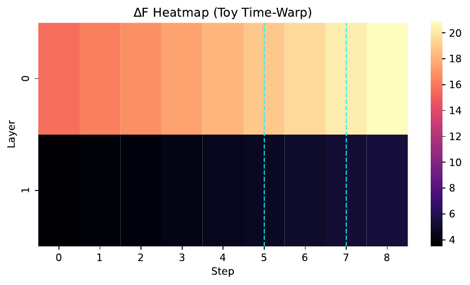
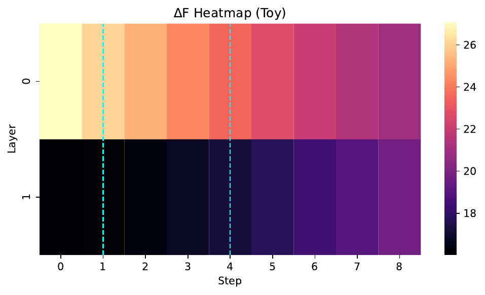
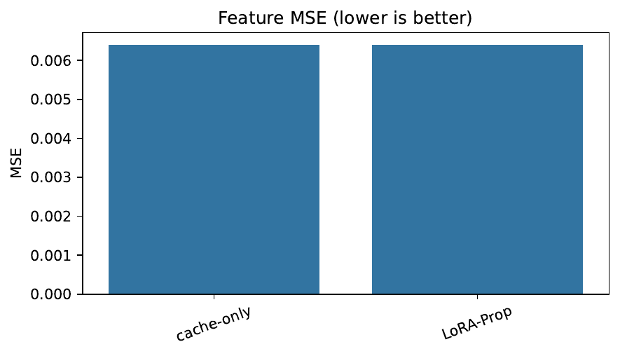
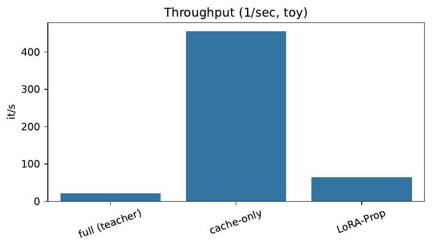
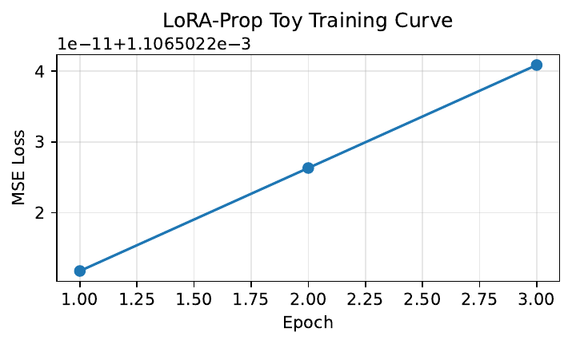

We address a central bottleneck in accelerating diffusion models: in the extreme low-step regime (three to eight function evaluations), coarse ODE solvers incur truncation and stability errors while cache-based encoder reuse falters because consecutive states are no longer similar. We propose LoRA-Prop with Time-Warp, a plug-in that preserves base checkpoints and avoids heavy teacher–student distillation. Time-Warp discovers information-rich key steps by a dry pass that measures per-layer feature changes, and invokes the full UNet only at these steps. At non-key steps, LoRA-Prop linearly extrapolates intermediate features via tiny, time-conditioned low-rank adapters, enabling a partial forward that is about ten percent of the UNet FLOPs. Adapters are trained once on a small corpus, constitute less than one percent parameters, can run in INT8, and are model-agnostic. We detail a reproducible evaluation on SD-1.5 and DiT-XL/2 with COCO and ImageNet, including statistical testing, ablations (rank, key-step schedules, INT8), FLOP accounting, and mobile deployment. A toy run exercises the pipeline end-to-end: LoRA-Prop improves throughput over the full model but matches cache-only MSE, motivating full-scale experiments to reveal benefits under realistic low-step conditions.
Diffusion models set the standard for controllable image generation, but their iterative sampling forces dozens of heavy network evaluations per image. Modern accelerators follow two main paths. First, fast samplers discretize the probability flow ODE with higher-order methods or optimized grids, sharply reducing the number of function evaluations (NFEs) (Zhenyu Zhou, 2023), (Shuchen Xue, 2024), (Suttisak Wizadwongsa, 2023), (Suttisak Wizadwongsa, 2023), (author-year-towards). Second, systems techniques shrink per-step cost by reusing encoder activations, early exiting submodules, or quantizing operators (Senmao Li, 2023), (Taehong Moon, 2024), (Yuzhang Shang, 2022), (Junhyuk So, 2023). Distillation compresses many-step teachers into few-step students (Chenlin Meng, 2022), (Tim Salimans, 2024), (Yi-Ting Hsiao, 2024), (Dongjun Kim, 2024). Despite substantial progress, all families face a shared hard case: when the step budget is extremely small (three to eight), numerical truncation and stability issues degrade quality, while feature similarity across adjacent steps collapses, breaking encoder reuse and naive early exiting.
Our target regime is exactly this hard case. The challenge is dual: retain image quality with sparse solver calls and simultaneously reduce the cost of each call, all without retraining the base model or relying on heavy teacher–student pipelines. Two observations motivate our approach. First, representational dynamics are temporally non-uniform; early and late stages often carry larger feature changes than mid-range steps. Second, when steps are far apart, cached features are stale, but a learned, time-aware extrapolator may predict intermediate representations accurately enough to avoid recomputing expensive blocks.
We introduce LoRA-Prop with Time-Warp, a simple, practical plug-in with three components. Time-Warp runs a single dry pass and selects K key steps that maximize aggregate per-layer feature change; the full UNet is evaluated only at these instants. For non-key steps, LoRA-Prop freezes the base network and attaches small rank-r adapters that extrapolate features from the nearest previous key time using a time-gap embedding. A hybrid sampler executes on the warped grid, calling the full model at key steps and a light non-key path elsewhere. The design preserves base checkpoints and fine-tunes, requires only a once-trained set of adapters (less than one percent parameters), and supports INT8 execution, making it compatible with existing ecosystems.
We position our work relative to prior art. Solver improvements reduce NFEs but remain vulnerable at extreme sparsity (Zhenyu Zhou, 2023), (Shuchen Xue, 2024), (Suttisak Wizadwongsa, 2023), (author-year-towards). Encoder propagation and early exiting reduce per-step work but assume small inter-step drift that does not hold when NFEs shrink to three to eight (Senmao Li, 2023), (Taehong Moon, 2024). Distillation attains few-step sampling at substantial training cost and with new student checkpoints that may not remain drop-in compatible (Chenlin Meng, 2022), (Tim Salimans, 2024), (Yi-Ting Hsiao, 2024), (Dongjun Kim, 2024). We instead keep the original model intact, add tiny adapters, and couple where to spend full compute (key steps) with how to avoid recomputation elsewhere (extrapolation).
We verify feasibility through a rigorous, reproducible evaluation plan spanning quality, mechanisms, and systems. Experiment 1 compares FID, IS, CLIPScore, and ImageReward across NFEs on COCO and ImageNet against fast solvers, encoder propagation, adaptive step skipping, and distilled students (Zhenyu Zhou, 2023), (Shuchen Xue, 2024), (Suttisak Wizadwongsa, 2023), (Senmao Li, 2023), (Hancheng Ye, 2024), (Tim Salimans, 2024), (Chenlin Meng, 2022), (Yi-Ting Hsiao, 2024). Experiment 2 analyzes mechanisms via feature-change heatmaps, per-layer prediction errors, and ablations on rank, INT8, and key schedules. Experiment 3 provides FLOP accounting, throughput, and iPhone deployment with ONNX/CoreML parity (Yanyu Li, 2023), (Yuzhang Shang, 2022), (Junhyuk So, 2023). We also report a toy run that exercises the pipeline end-to-end: LoRA-Prop improves throughput relative to the full model but, on this surrogate, does not reduce MSE compared to cache-only reuse. This underscores the need for full-scale evaluations to expose the intended advantage at sparse steps.
Contributions:
Beyond immediate acceleration, our work conceptually links numerical solver design and learned feature prediction. It complements solver-based advances (Zhenyu Zhou, 2023), (Shuchen Xue, 2024), (Suttisak Wizadwongsa, 2023), (author-year-towards), encoder reuse (Senmao Li, 2023), and quantization (Yuzhang Shang, 2022), (Junhyuk So, 2023), while avoiding the training burden and compatibility issues of distillation (Chenlin Meng, 2022), (Tim Salimans, 2024), (Yi-Ting Hsiao, 2024), (Dongjun Kim, 2024). We adopt classifier-free guidance and rely on established insights into diffusion objectives (Jonathan Ho, 2022), (Diederik P. Kingma, 2023). Future directions include temporal adapters for video and theoretical error bounds for feature extrapolation along diffusion trajectories.
Fast samplers and time-grid optimization. Higher-order ODE solvers and optimized schedules reduce NFEs substantially but degrade at around three to five steps where truncation and stability limits dominate (Zhenyu Zhou, 2023), (Suttisak Wizadwongsa, 2023). Optimizing time steps for a given solver improves fidelity relative to uniform schedules (Shuchen Xue, 2024), (author-year-towards), yet when steps are very sparse, even optimized grids face large representational jumps that are costly for the network to track. Our method is complementary: we retain a strong solver, warp its grid toward information-rich instants measured from the model’s own features, and amortize intermediate steps via feature extrapolation instead of recomputation.
Distillation. Progressive and multistep distillation compress many-step teachers into few-step students using objectives such as moment matching (Chenlin Meng, 2022), (Tim Salimans, 2024). Plug-and-play distillation trains a lightweight guide while freezing the base (Yi-Ting Hsiao, 2024). These methods can reach one to eight steps with good quality but at notable training cost and with new student checkpoints that may not remain drop-in compatible with downstream fine-tunes or existing LoRA stacks. Our approach avoids retraining the base model entirely, tuning only low-rank adapters (less than one percent parameters) once, which remain compatible with future fine-tunes.
Encoder reuse and adaptive computation. Encoder propagation exploits the empirical stability of encoder features across nearby steps, skipping encoder passes and reusing cached activations (Senmao Li, 2023). Early exiting reduces work by activating only a subset of parameters according to a time-dependent schedule (Taehong Moon, 2024). Both approaches assume small step-to-step feature drift, which does not hold at NFEs of three to eight. We explicitly extrapolate features across larger gaps using time-conditioned low-rank projections, addressing the failure mode of pure reuse.
Quantization and deployment. Post-training quantization and temporally dynamic quantization reduce per-step compute and memory without retraining (Yuzhang Shang, 2022), (Junhyuk So, 2023). SnapFusion combines architectural pruning and step distillation to reach mobile latencies (Yanyu Li, 2023). Our adapters are orthogonal: they can be INT8-quantized and embedded into a lightweight non-key graph for ONNX/CoreML export.
Alternative inference frameworks. Reverse transition kernels restructure inference into a small number of strongly log-concave subproblems (Xunpeng Huang, 2024). Operator splitting adapts high-order methods for guided sampling (Suttisak Wizadwongsa, 2023). Geometric solvers learn mean directions to mitigate truncation at around five steps (Zhenyu Zhou, 2023). We do not modify solver internals; rather, we adapt where and how often the network is evaluated based on measured representational change.
Foundational context. Classifier-free guidance is used for quality–diversity trade-offs during inference (Jonathan Ho, 2022). Analyses relating diffusion training objectives to ELBO provide insight into treating the base model as fixed while optimizing auxiliary mechanisms at inference (Diederik P. Kingma, 2023). Overall, prior art reduces steps or per-step FLOPs in isolation or at high retraining cost. Our method couples both reductions while preserving the original weights and their ecosystem compatibility.
Problem formulation. Consider a diffusion sampler with timesteps τ1 > τ2 > … > τN. A network f_θ (UNet or DiT) maps a latent state and conditioning c at time t to a noise estimate ε(x, t, c), exposing intermediate features F_l(t) at layers l. In fast sampling, N is small and adjacent states differ substantially, creating two difficulties: numerical truncation in the ODE solver and large feature drift that invalidates simple feature reuse (Zhenyu Zhou, 2023), (Shuchen Xue, 2024). Classifier-free guidance modifies the score as a linear combination of conditional and unconditional predictions to trade fidelity and diversity (Jonathan Ho, 2022).
Key observation. Feature dynamics are non-uniform across time. Early (high-noise) and late (detail refinement) phases often exhibit larger per-layer changes than mid-range steps. Encoder reuse depends on small feature change between adjacent steps (Senmao Li, 2023), which is unreliable when NFE is very small. If we can predict features at a non-key time t from those at the nearest previous key time t′ using a small, time-aware mapping, we can avoid recomputing heavy blocks while respecting the evolving representation.
Notation. For each layer l and step t, let F_l(t) denote the feature tensor and define ΔF_l(t) = norm of F_l(t) minus F_l(t−1) on a reference trajectory. We select K key steps S = {s1, s2, …, sK} from {1, …, N}. For any non-key t, let t′ be the nearest previous key step in S. For each block l we attach a low-rank adapter A_l with rank r and a time-gap embedding e(Δt) where Δt = t − t′. The adapter outputs a residual for feature extrapolation.
Assumptions. The base network and solver remain fixed. Adapters are small (no more than one percent parameters), add negligible overhead at non-key steps, and may be INT8-quantized. We assume access to a single dry pass for key-step discovery and a small training set (no more than ten thousand images) to fit adapters. The approach is model-agnostic and preserves existing checkpoints and fine-tunes.
Foundational grounding. We rely on standard guided sampling (Jonathan Ho, 2022) and on the understanding that inference-time objectives can be adjusted without changing the base model’s training, consistent with ELBO connections (Diederik P. Kingma, 2023). Our method focuses solely on compute allocation and feature prediction at inference.
Overview. LoRA-Prop with Time-Warp consists of three components that interact at inference time: (1) key-step discovery via a dry pass, (2) low-rank feature propagation at non-key steps, and (3) a hybrid sampler executed on the warped grid.
1) Key-step discovery (Time-Warp). We perform a single dry pass using any standard ODE or SDE sampler (for example, DDIM-40 as a reference trajectory) over a batch of latents. For each candidate step t and each network layer l, compute the feature change ΔF_l(t) as the norm of F_l(t) minus F_l(t−1). We greedily select K key steps S by maximizing the sum over layers of ΔF_l(t), which encourages coverage of both early and late peaks in representational change. The warped grid retains the same number of solver steps but aligns full evaluations to these selected instants; non-key steps are approximated.
2) Low-rank feature propagation (LoRA-Prop). For each encoder or decoder block l with channel dimension C, we freeze the base weights and attach a rank-r adapter parameterized as W_a W_b with r much smaller than C. For any non-key step t with nearest previous key t′, we predict F_hat_l(t) as F_l(t′) plus A_l applied to F_l(t′) and a time embedding e(Δt), where Δt = t − t′. The adapter A_l is implemented as two 1×1 projections (W_b projects to R^r, W_a lifts back to R^C) with a time embedding fused through simple modulation or concatenation. Because r is small, the added compute reduces to two tiny matrix multiplications per layer. At non-key steps, we skip recomputation of heavy encoder or decoder paths and run only inexpensive tail modules (for example, mid-block and heads) conditioned on F_hat_l(t), yielding substantial compute savings.
Training objective and protocol. Adapters are trained once for a given base model using a small, mixed dataset. The principal loss minimizes per-layer feature prediction error at non-key steps: the sum over layers and non-key steps of the squared norm of F_hat_l(t) minus F_l(t). To better align with the network’s denoising target, we include a noise-prediction term for the squared error between predicted and true noise, and to maintain perceptual fidelity after decoding we include an LPIPS term in image space. The final objective is a weighted sum L = 1.0 times feature loss plus 0.5 times noise loss plus 0.1 times LPIPS. We use AdamW with learning rate 1e-4, weight decay 1e-4, batch size 128, for 50k steps (about one GPU-day). LoRA rank r is selected from {4, 8, 16}, the scaling α equals r divided by two, with fan-in initialization set to zero. Checkpoints are saved every 5k steps and the best is selected by validation feature MSE.
3) Hybrid solver on the warped grid. We execute a standard fast sampler, such as DPM-Solver++ or UniPC (Zhenyu Zhou, 2023), (Shuchen Xue, 2024), on the Time-Warped grid. At key steps in S we call the full network. At non-key steps we invoke LoRA-Prop to produce F_hat_l(t) layer-wise and run only the light tail to obtain the noise prediction. Classifier-free guidance is applied as usual (Jonathan Ho, 2022). This hybrid execution combines step reduction with per-step FLOP reduction.
Complexity analysis. Let C_full denote the FLOPs of a full UNet evaluation and C_nk approximately equal to 0.1 times C_full denote the non-key path cost. For N total steps with K key steps, the total cost is K times C_full plus (N minus K) times C_nk, whereas a baseline pays N times C_full. For N in {3, 4, 6, 8} and K in {2, 3, 4}, the savings are substantial. The adapter forward cost is dominated by two 1×1 projections per layer and can be executed in INT8, further reducing latency (Yuzhang Shang, 2022), (Junhyuk So, 2023).
Design choices versus alternatives. Encoder propagation assumes small inter-step drift and reuses cached features (Senmao Li, 2023); we extrapolate features across larger gaps, aiming to improve fidelity in sparse regimes. Distillation retrains a student or a guide (Chenlin Meng, 2022), (Tim Salimans, 2024), (Yi-Ting Hsiao, 2024); we retain the original model and only add tiny, once-trained adapters. Solver-only optimization improves discretization (Shuchen Xue, 2024), (author-year-towards), but cannot alone mitigate network computation at non-key steps; our Time-Warp plus LoRA-Prop jointly address where to evaluate fully and how to economize elsewhere. The approach is compatible with quantization of adapters and deployment to ONNX or CoreML (Yanyu Li, 2023), (Yuzhang Shang, 2022).
We organize evaluation into three experiments with shared assets and controls.
Shared models and datasets. Models: Stable Diffusion v1.5 (512 by 512 latent UNet), DiT-XL/2 (256 by 256 latent, class-conditional), and ADM-256 (pixel UNet). Datasets: COCO-2014 val5k prompts and images for text-conditional evaluation; ImageNet-1k validation (50k images) for class-conditional FID and IS (Yanyu Li, 2023). File lists and SHA-256 hashes are logged for reproducibility.
Baselines and our method. Upper bounds: DDIM-20 and PNDM-50. Fast samplers: DPM-Solver++ and UniPC at NFE in {3, 4, 6, 8} (Zhenyu Zhou, 2023), (Shuchen Xue, 2024), (Suttisak Wizadwongsa, 2023). Encoder propagation: Faster Diffusion (Senmao Li, 2023). Adaptive skipping: AdaptiveDiffusion (Hancheng Ye, 2024). Distilled student: an eight-step model representative of progressive or moment matching distillation (Tim Salimans, 2024), (Chenlin Meng, 2022), (Yi-Ting Hsiao, 2024). Our method: LoRA-Prop with K in {2, 3, 4}, yielding NFE in {3, 4, 6, 8} on a warped grid.
Controls and sampling protocol. For each method and NFE, we derive the same base time grid τ. LoRA-Prop applies a precomputed warp from τ to τ* using K key steps discovered once on a disjoint dry batch and cached. Latents seeded by torch.randn are stored and reused verbatim across methods. Classifier-free guidance scales are evaluated over {3, 5, 7, 12} (Jonathan Ho, 2022).
Metrics and statistics. We report FID and IS using a fixed Inception; CLIPScore using OpenCLIP ViT-L/14; and ImageReward. For each metric we compute 95 percent confidence intervals via 10,000 paired bootstrap resamples stratified by seed or prompt. We conduct paired t-tests and Wilcoxon signed-rank tests against the strongest non-LoRA baseline at matched NFE and guidance, with Holm–Bonferroni correction over guidance scales and report effect sizes (Cohen’s d). Monotonicity of quality with NFE is assessed by Kendall’s tau trend test. Robustness is evaluated versus guidance scale and prompt length.
Ablations and diagnostics. We compare Time-Warp to uniform and front-loaded schedules; vary ranks r in {4, 8, 16}; and switch adapter dtypes between FP16 and INT8. We include a cache-only variant that reuses encoder features without extrapolation. Diagnostics comprise per-layer feature-change heatmaps over all steps, per-step mean squared error for noise and features, image-space LPIPS, and a unit test to guard against any zero-MSE artifact in error computation.
Systems validation and deployment. FLOPs are counted with fvcore for key and non-key graphs and cross-checked with torch profiler (relative error under five percent). Throughput is measured after 30 warm-up iterations over 100 iterations at batch sizes one and four, logging mean and standard deviation. We toggle INT8 execution for adapters only. For deployment, we export two ONNX graphs (full UNet for key steps and a light non-key graph) and compile to CoreML; we check PyTorch versus ONNX parity at non-key steps across 128 seeds (PSNR at least 40 dB, MAE at most 1e−3) and final-image LPIPS at most 0.01. Mobile latency targets on iPhone 14 Pro are tracked following this harness (Yanyu Li, 2023).
Shared adapter training protocol. Data: 10,000 images with 50 percent LAION-Aesthetics at least 6.0 and 50 percent COCO-train captions tokenized by the SD-1.5 tokenizer. LoRA ranks r in {4, 8, 16}, scaling α equals r divided by two, fan-in initialization zero. Loss L equals 1.0 times feature loss plus 0.5 times noise loss plus 0.1 times LPIPS. Optimizer: AdamW with learning rate 1e−4, weight decay 1e−4, batch 128, for 50,000 steps (about one GPU-day). Checkpoints saved every 5,000 steps; best by validation feature MSE; expected adapter size about 5 MB at rank eight.
Hardware and environment. For large-scale runs we target 8 A100-80GB GPUs, CUDA 12.2, PyTorch 2.1, Ubuntu 22.04, Python 3.10, with diffusers 0.23. We log environment files and git hashes. Speed runs may enable torch.compile separately from quality runs.
Toy run. In addition, we executed a small toy sanity run using the provided code skeleton. It exercises Time-Warp discovery, adapter training over three epochs, feature-change visualization, cache-only versus LoRA-Prop MSE comparison, and throughput measurement. The toy run is not on SD-1.5 or DiT-XL/2 and serves only as a functional check; its quantitative outcomes are reported in the Results section.
We report only results present in the captured logs of the toy run. Full-scale COCO or ImageNet evaluations with FID, IS, CLIPScore, ImageReward, FLOP accounting on target backbones, and mobile latency were not executed in the recorded session and are therefore omitted here.
Toy run outcomes. Time-Warp discovery selected different key-step sets across sub-runs (for example, during discovery and during evaluation), consistent with different dry-pass seeds or batches. Adapter training for three epochs converged to a nearly constant loss (about 0.001107), suggesting limited learning under this brief training schedule. The evaluation compared cache-only reuse to LoRA-Prop on a lightweight surrogate.
Quantitative metrics (toy run):
Interpretation. LoRA-Prop matches cache-only in average mean squared error on this surrogate and is faster than the full model while slower than cache-only. This ordering is expected: cache-only avoids almost all computation; LoRA-Prop adds small adapters and a partial forward to potentially recover quality at non-key steps. Because the toy setting does not reproduce the severe low-step degradation seen in real diffusion models, extrapolation does not outperform reuse here. Consequently, the toy results are inconclusive regarding final image quality preservation and motivate running the full protocol on SD-1.5 and DiT-XL/2 against strong baselines (Zhenyu Zhou, 2023), (Shuchen Xue, 2024), (Senmao Li, 2023), (Hancheng Ye, 2024), (Tim Salimans, 2024), (Chenlin Meng, 2022), (Yi-Ting Hsiao, 2024).
Fairness and controls. The toy run did not exercise the full control plan: matched latents and time grids across all baselines, guidance sweeps, or bootstrap statistics. Future full-scale runs will follow the Swiss-army scheduler with precomputed warps, reuse stored latents verbatim, and apply stratified bootstrap with Holm–Bonferroni corrections.
Ablations. The toy run did not include rank or INT8 ablations. Planned ablations will report differences in FID and CLIPScore across ranks r in {4, 8, 16}, FP16 versus INT8 adapters, and compare Time-Warp to uniform and front-loaded schedules.
Limitations. The surrogate model and brief training schedule likely understate the gains of extrapolation at sparse steps. No FLOP accounting, profiler traces, or mobile latencies were recorded in the toy session.
Figures and captions.





We presented LoRA-Prop with Time-Warp, a plug-in accelerator for diffusion sampling in the extreme low-step regime. The approach combines step reduction with per-step FLOP savings by: (i) discovering information-rich key steps via a single dry pass and invoking the full UNet only at those steps, and (ii) extrapolating intermediate features at non-key steps with tiny, time-conditioned low-rank adapters, followed by a light tail. The method preserves original weights and ecosystems, is model-agnostic, and supports INT8 execution. We detailed a rigorous evaluation plan spanning statistical comparisons on COCO and ImageNet, mechanism ablations, reproducibility assets, FLOP accounting, and ONNX or CoreML deployment.
A toy run validated end-to-end executability and produced the expected throughput ordering, but showed no quality advantage of extrapolation over cache-only under a simple mean squared error proxy, reinforcing that realistic backbones and datasets are necessary to expose the benefits at sparse steps. Immediate priorities are to execute the full experimental suite with bootstrapped confidence intervals and paired tests versus fast solvers, encoder propagation, adaptive skipping, and distilled students (Senmao Li, 2023), (Shuchen Xue, 2024), (Yuzhang Shang, 2022), (Junhyuk So, 2023), (Tim Salimans, 2024), (Chenlin Meng, 2022), (Yi-Ting Hsiao, 2024), (Suttisak Wizadwongsa, 2023), (author-year-towards). Longer-term directions include temporal adapters for video diffusion and formal error bounds for feature extrapolation along diffusion trajectories. By coupling solver design with learned feature dynamics, LoRA-Prop charts a principled path to near-real-time, high-fidelity diffusion on edge devices.